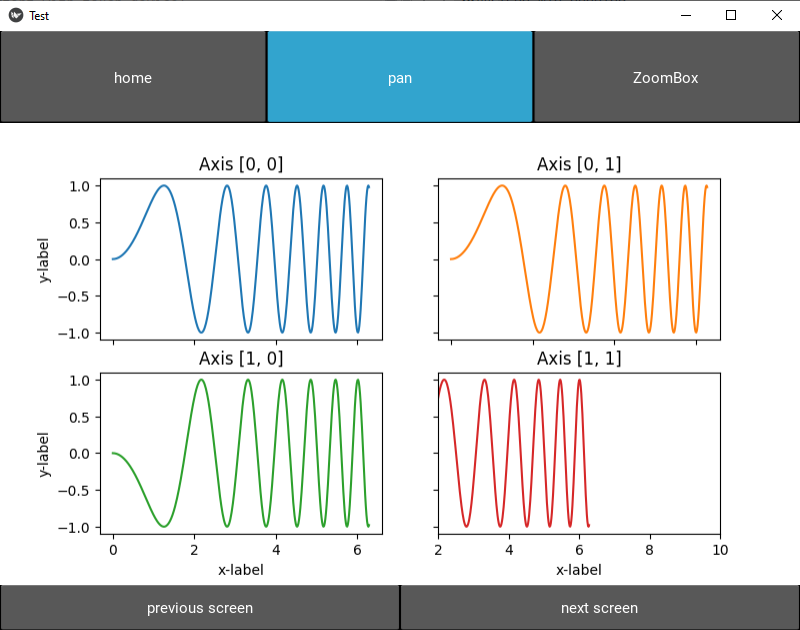

Subplot
This example show how to used MatplotFigureSubplot widget when you have multiple axes or any kind of other matplotlib figure with no lines only.

example folder: 'example_4_differents_subplot'
from kivy.utils import platform
from kivy.config import Config
#avoid conflict between mouse provider and touch (very important with touch device)
#no need for android platform
if platform != 'android':
Config.set('input', 'mouse', 'mouse,disable_on_activity')
else:
#for android, we remove mouse input to not get extra touch
Config.remove_option('input', 'mouse')
from kivy.lang import Builder
from kivy.app import App
import matplotlib.pyplot as plt
from kivy.metrics import dp
import numpy as np
from kivy_matplotlib_widget.uix.hover_widget import add_hover,BaseHoverFloatLayout
from matplotlib.ticker import FormatStrFormatter
from kivy.properties import ColorProperty,NumericProperty,StringProperty
from matplotlib import gridspec
from numpy.random import rand
from matplotlib.ticker import NullFormatter, MaxNLocator
from numpy import linspace
KV = '''
BoxLayout:
orientation:'vertical'
BoxLayout:
size_hint_y:0.2
Button:
text:"home"
on_release:app.home()
ToggleButton:
group:'touch_mode'
state:'down'
text:"pan"
on_release:
app.set_touch_mode('pan')
self.state='down'
ToggleButton:
group:'touch_mode'
text: 'ZoomBox'
on_press:
app.set_touch_mode('zoombox')
self.state='down'
BoxLayout:
ScreenManager:
id:sm
Screen1:
Screen2:
Screen3:
Screen4:
BoxLayout:
size_hint_y:0.1
Button:
text:"previous screen"
on_release:app.previous_screen()
Button:
text:"next screen"
on_release:app.next_screen()
<Screen1@Screen>
name:'screen1'
figure_wgt:figure_wgt
MatplotFigureSubplot:
id:figure_wgt
fast_draw:True
interactive_axis:True
<Screen2@Screen>
name:'screen2'
figure_wgt:figure_wgt
MatplotFigureSubplot:
id:figure_wgt
fast_draw:True
interactive_axis:True
draw_all_axes:True
<Screen3@Screen>
name:'screen3'
figure_wgt:figure_wgt
MatplotFigureSubplot:
id:figure_wgt
fast_draw:True
interactive_axis:True
draw_all_axes:True
<Screen4@Screen>
name:'screen4'
figure_wgt:figure_wgt
MatplotFigureSubplot:
id:figure_wgt
max_hover_rate:5/60
fast_draw:True
interactive_axis:True
draw_all_axes:True
<PlotlyHover2>
custom_color: [0,0,0,1]
BoxLayout:
id:main_box
x:
root.x_hover_pos + dp(4)
y:
root.y_hover_pos - root.hover_height/2
size_hint: None, None
height: label.texture_size[1]+ dp(4)
width:
self.minimum_width + dp(12) if root.show_cursor \
else dp(0.0001)
orientation:'vertical'
padding: 0,-dp(1),0,0
canvas:
Color:
rgba: root.custom_color if root.custom_color else [0,0,0,1]
Rectangle:
pos: self.pos
size: self.size
Triangle:
points:
[ \
root.x_hover_pos, root.y_hover_pos, \
main_box.x, root.y_hover_pos+ dp(4), \
main_box.x, root.y_hover_pos- dp(4) \
]
SmoothLine:
width:dp(1)
points:
[ \
root.x_hover_pos, root.y_hover_pos, \
main_box.x, root.y_hover_pos \
]
BoxLayout:
size_hint_x:None
width:label.texture_size[0]
padding: dp(12),0,0,0
Label:
id:label
text:
'(' + root.label_x_value +','+ root.label_y_value +')'
font_size:root.text_size
color:
[0,0,0,1] if (root.custom_color[0]*0.299 + \
root.custom_color[1]*0.587 + root.custom_color[2]*0.114) > 186/255 \
else [1,1,1,1]
font_name : root.text_font
font_name : root.text_font
FloatLayout:
size_hint: None,None
width: dp(0.01)
height: dp(0.01)
BoxLayout:
size_hint:None,None
x:main_box.x + main_box.width + dp(4)
y:main_box.y + main_box.height/2 - label3.texture_size[1]/2
width:label3.texture_size[0]
height:label3.texture_size[1]
Label:
id:label3
text:
root.custom_label if root.custom_label and not '_child' in root.custom_label else ''
font_size:root.text_size
color: root.text_color
font_name : root.text_font
<InfoHover2>
custom_color: [0,0,0,1]
BoxLayout:
id:main_box
x:
root.x_hover_pos + dp(4) if root.x_hover_pos + dp(4) < root.figwidth - label.texture_size[0] - self.padding[0] * 2 \
else root.x_hover_pos - dp(4) - max(label.texture_size[0],label2.texture_size[0]) - self.padding[0] * 2
y:
root.y_hover_pos + dp(4)
size_hint: None, None
height: root.hover_height
width:
max(label.texture_size[0],label2.texture_size[0]) + dp(12) if root.show_cursor \
else dp(0.0001)
orientation:'vertical'
padding: 0,dp(4),0,dp(4)
canvas:
Color:
rgba: root.custom_color if root.custom_color else [0,0,0,1]
Rectangle:
pos: self.pos
size: self.size
Color:
rgba: 0,0,0,1
Line:
width: 1
rounded_rectangle:
(self.x, self.y, self.width, self.height,\
dp(4), dp(4), dp(4), dp(4),\
self.height)
canvas.after:
Color:
rgba: 0,0,0,1
Rectangle:
size: (dp(8),dp(8))
pos:
(root.x_hover_pos-dp(8/2), \
root.y_hover_pos-dp(8/2))
BoxLayout:
size_hint_x:None
width:label.texture_size[0]
padding: dp(12),0,0,0
Label:
id:label
text:
root.label_x + ': ' + root.label_x_value
font_size:root.text_size
color:
[0,0,0,1] if (root.custom_color[0]*0.299 + \
root.custom_color[1]*0.587 + root.custom_color[2]*0.114) > 186/255 \
else [1,1,1,1]
font_name : root.text_font
BoxLayout:
size_hint_x:None
width:label2.texture_size[0]
padding: dp(12),0,0,0
Label:
id:label2
text:
root.label_y + ': ' + root.label_y_value
font_size:root.text_size
color:
[0,0,0,1] if (root.custom_color[0]*0.299 + \
root.custom_color[1]*0.587 + root.custom_color[2]*0.114) > 186/255 \
else [1,1,1,1]
font_name : root.text_font
FloatLayout:
size_hint: None,None
width: dp(0.01)
height: dp(0.01)
BoxLayout:
size_hint:None,None
x:main_box.x + main_box.width + dp(4)
y:main_box.y + main_box.height - label3.texture_size[1]
width:label3.texture_size[0]
height:label3.texture_size[1]
Label:
id:label3
text:
root.custom_label if root.custom_label and not '_child' in root.custom_label else ''
font_size:root.text_size
color: root.text_color
font_name : root.text_font
'''
class PlotlyHover2(BaseHoverFloatLayout):
""" PlotlyHover adapt the background and the font color with the line or scatter color"""
text_color=ColorProperty([0,0,0,1])
text_font=StringProperty("Roboto")
text_size = NumericProperty(dp(14))
hover_height = NumericProperty(dp(24))
def __init__(self, **kwargs):
""" init class """
super().__init__(**kwargs)
class InfoHover2(BaseHoverFloatLayout):
""" InfoHover adapt the background and the font color with the line or scatter color"""
text_color=ColorProperty([0,0,0,1])
text_font=StringProperty("Roboto")
text_size = NumericProperty(dp(14))
hover_height = NumericProperty(dp(48))
def __init__(self, **kwargs):
""" init class """
super().__init__(**kwargs)
class Test(App):
lines = []
def build(self):
self.graph_app = Builder.load_string(KV)
return self.graph_app
def on_start(self, *args):
# =============================================================================
# figure 1 - screen1
# =============================================================================
x = np.linspace(0, 2 * np.pi, 400)
y = np.sin(x ** 2)
fig, axs = plt.subplots(2, 2)
axs[0, 0].plot(x, y)
axs[0, 0].set_title('Axis [0, 0]')
axs[0, 1].plot(x, y, 'tab:orange')
axs[0, 1].set_title('Axis [0, 1]')
axs[1, 0].plot(x, -y, 'tab:green')
axs[1, 0].set_title('Axis [1, 0]')
axs[1, 1].plot(x, -y, 'tab:red')
axs[1, 1].set_title('Axis [1, 1]')
axs[1, 1].set_xlim(2,10)
for ax in axs.flat:
ax.set(xlabel='x-label', ylabel='y-label')
# Hide x labels and tick labels for top plots and y ticks for right plots.
for ax in axs.flat:
ax.label_outer()
screen1=self.graph_app.ids.sm.get_screen('screen1')
screen1.figure_wgt.figure = fig
screen1.figure_wgt.cursor_xaxis_formatter = FormatStrFormatter('%.1f')
screen1.figure_wgt.cursor_yaxis_formatter = FormatStrFormatter('%.1f')
screen1.figure_wgt.register_cursor()
add_hover(screen1.figure_wgt,mode='desktop',hover_widget=PlotlyHover2())
# =============================================================================
# figure 2 - screen2
# =============================================================================
x = np.linspace(0, 2 * np.pi, 400)
y = np.sin(x ** 2)
fig2 = plt.figure()
# set height ratios for subplots
gs = gridspec.GridSpec(2, 1, height_ratios=[2, 1])
# the first subplot
ax0 = plt.subplot(gs[0])
# log scale for axis Y of the first subplot
ax0.set_yscale("log")
line0, = ax0.plot(x, y, color='r',label='red line')
# the second subplot
# shared axis X
ax1 = plt.subplot(gs[1], sharex = ax0)
line1, = ax1.plot(x, y, color='b', linestyle='--',label='red line')
plt.setp(ax0.get_xticklabels(), visible=False)
# remove last tick label for the second subplot
yticks = ax1.yaxis.get_major_ticks()
yticks[-1].label1.set_visible(False)
# put legend on first subplot
ax0.legend((line0, line1), ('red line', 'blue line'), loc='lower left')
# remove vertical gap between subplots
plt.subplots_adjust(hspace=.0)
screen2=self.graph_app.ids.sm.get_screen('screen2')
screen2.figure_wgt.figure = fig2
screen2.figure_wgt.cursor_xaxis_formatter = FormatStrFormatter('%.1f')
screen2.figure_wgt.cursor_yaxis_formatter = FormatStrFormatter('%.1f')
screen2.figure_wgt.register_cursor()
add_hover(screen2.figure_wgt,mode='desktop',hover_widget=PlotlyHover2())
# =============================================================================
# figure 3 - screen3
# =============================================================================
# create all axes we need
ax0 = plt.subplot(211)
ax1 = ax0.twinx()
ax2 = plt.subplot(212)
ax3 = ax2.twinx()
# share the secondary axes
if hasattr(ax1,'sharey'):
ax1.sharey(ax3)
else:
ax1.get_shared_y_axes().join(ax1, ax3)
ax0.plot(rand(1) * rand(10),'r')
ax1.plot(10*rand(1) * rand(10),'b')
ax2.plot(3*rand(1) * rand(10),'g')
ax3.plot(10*rand(1) * rand(10),'y')
fig3=plt.gcf()
screen3=self.graph_app.ids.sm.get_screen('screen3')
screen3.figure_wgt.figure = fig3
screen3.figure_wgt.cursor_xaxis_formatter = FormatStrFormatter('%.1f')
screen3.figure_wgt.cursor_yaxis_formatter = FormatStrFormatter('%.1f')
screen3.figure_wgt.register_cursor()
add_hover(screen3.figure_wgt,mode='desktop',hover_widget=PlotlyHover2())
# =============================================================================
# figure 4 - screen4
# =============================================================================
# Define a function to make the ellipses
def ellipse(ra,rb,ang,x0,y0,Nb=100):
xpos,ypos=x0,y0
radm,radn=ra,rb
an=ang
co,si=np.cos(an),np.sin(an)
the=linspace(0,2*np.pi,Nb)
X=radm*np.cos(the)*co-si*radn*np.sin(the)+xpos
Y=radm*np.cos(the)*si+co*radn*np.sin(the)+ypos
return X,Y
# Define the x and y data
# For example just using random numbers
x = np.random.randn(10000)
y = np.random.randn(10000)
# Set up default x and y limits
xlims = [min(x),max(x)]
ylims = [min(y),max(y)]
# Set up your x and y labels
xlabel = '$\mathrm{Your\\ X\\ Label}$'
ylabel = '$\mathrm{Your\\ Y\\ Label}$'
# Define the locations for the axes
left, width = 0.12, 0.55
bottom, height = 0.12, 0.55
bottom_h = left_h = left+width+0.02
# Set up the geometry of the three plots
rect_temperature = [left, bottom, width, height] # dimensions of temp plot
rect_histx = [left, bottom_h, width, 0.25] # dimensions of x-histogram
rect_histy = [left_h, bottom, 0.25, height] # dimensions of y-histogram
# Set up the size of the figure
fig4 = plt.figure(1, figsize=(9.5,9))
# Make the three plots
axTemperature = plt.axes(rect_temperature) # temperature plot
axHistx = plt.axes(rect_histx, sharex = axTemperature) # x histogram
axHisty = plt.axes(rect_histy, sharey = axTemperature) # y histogram
# Remove the inner axes numbers of the histograms
nullfmt = NullFormatter()
axHistx.xaxis.set_major_formatter(nullfmt)
axHisty.yaxis.set_major_formatter(nullfmt)
# Find the min/max of the data
xmin = min(xlims)
xmax = max(xlims)
ymin = min(ylims)
ymax = max(y)
# Make the 'main' temperature plot
# Define the number of bins
nxbins = 50
nybins = 50
nbins = 100
xbins = linspace(start = xmin, stop = xmax, num = nxbins)
ybins = linspace(start = ymin, stop = ymax, num = nybins)
xcenter = (xbins[0:-1]+xbins[1:])/2.0
ycenter = (ybins[0:-1]+ybins[1:])/2.0
H, xedges,yedges = np.histogram2d(y,x,bins=(ybins,xbins))
X = xcenter
Y = ycenter
Z = H
# Plot the temperature data
cax = (axTemperature.imshow(H, extent=[xmin,xmax,ymin,ymax],
interpolation='nearest', origin='lower',aspect='auto'))
# Plot the temperature plot contours
contourcolor = 'w'
xcenter = np.mean(x)
ycenter = np.mean(y)
ra = np.std(x)
rb = np.std(y)
ang = 0
X,Y=ellipse(ra,rb,ang,xcenter,ycenter)
axTemperature.plot(X,Y,":",color = contourcolor,ms=1,linewidth=2.0)
axTemperature.annotate('$1\\sigma$', xy=(X[15], Y[15]), xycoords='data',xytext=(10, 10),
textcoords='offset points', horizontalalignment='right',
verticalalignment='bottom',fontsize=25)
X,Y=ellipse(2*ra,2*rb,ang,xcenter,ycenter)
axTemperature.plot(X,Y,":",color = contourcolor,ms=1,linewidth=2.0)
axTemperature.annotate('$2\\sigma$', xy=(X[15], Y[15]), xycoords='data',xytext=(10, 10),
textcoords='offset points',horizontalalignment='right',
verticalalignment='bottom',fontsize=25, color = contourcolor)
X,Y=ellipse(3*ra,3*rb,ang,xcenter,ycenter)
axTemperature.plot(X,Y,":",color = contourcolor, ms=1,linewidth=2.0)
axTemperature.annotate('$3\\sigma$', xy=(X[15], Y[15]), xycoords='data',xytext=(10, 10),
textcoords='offset points',horizontalalignment='right',
verticalalignment='bottom',fontsize=25, color = contourcolor)
#Plot the axes labels
axTemperature.set_xlabel(xlabel,fontsize=25)
axTemperature.set_ylabel(ylabel,fontsize=25)
#Make the tickmarks pretty
ticklabels = axTemperature.get_xticklabels()
for label in ticklabels:
label.set_fontsize(18)
label.set_family('serif')
ticklabels = axTemperature.get_yticklabels()
for label in ticklabels:
label.set_fontsize(18)
label.set_family('serif')
#Set up the plot limits
axTemperature.set_xlim(xlims)
axTemperature.set_ylim(ylims)
#Set up the histogram bins
xbins = np.arange(xmin, xmax, (xmax-xmin)/nbins)
ybins = np.arange(ymin, ymax, (ymax-ymin)/nbins)
#Plot the histograms
axHistx.hist(x, bins=xbins, color = 'blue')
axHisty.hist(y, bins=ybins, orientation='horizontal', color = 'red')
#Set up the histogram limits
axHistx.set_xlim( min(x), max(x) )
axHisty.set_ylim( min(y), max(y) )
#Make the tickmarks pretty
ticklabels = axHistx.get_yticklabels()
for label in ticklabels:
label.set_fontsize(12)
label.set_family('serif')
#Make the tickmarks pretty
ticklabels = axHisty.get_xticklabels()
for label in ticklabels:
label.set_fontsize(12)
label.set_family('serif')
#Cool trick that changes the number of tickmarks for the histogram axes
axHisty.xaxis.set_major_locator(MaxNLocator(4))
axHistx.yaxis.set_major_locator(MaxNLocator(4))
fig4=plt.gcf()
screen4=self.graph_app.ids.sm.get_screen('screen4')
screen4.figure_wgt.figure = fig4
screen4.figure_wgt.cursor_xaxis_formatter = FormatStrFormatter('%.1f')
screen4.figure_wgt.cursor_yaxis_formatter = FormatStrFormatter('%.1f')
screen4.figure_wgt.register_cursor()
add_hover(screen4.figure_wgt,mode='desktop',hover_widget=InfoHover2())
def set_touch_mode(self,mode):
for screen in self.graph_app.ids.sm.screens:
if hasattr(screen,'figure_wgt'):
screen.figure_wgt.touch_mode=mode
def home(self):
screen=self.graph_app.ids.sm.current_screen
screen.figure_wgt.main_home()
def previous_screen(self):
screen_name=self.graph_app.ids.sm.current
screen_number = int(screen_name[-1])
if screen_number<=1:
screen_number=4
else:
screen_number-=1
self.graph_app.ids.sm.current = 'screen' + str(screen_number)
def next_screen(self):
screen_name=self.graph_app.ids.sm.current
screen_number = int(screen_name[-1])
if screen_number>=4:
screen_number=1
else:
screen_number+=1
self.graph_app.ids.sm.current = 'screen' + str(screen_number)
Test().run()